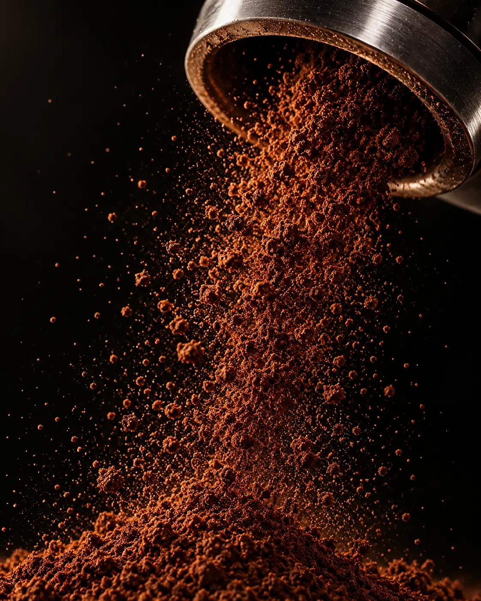
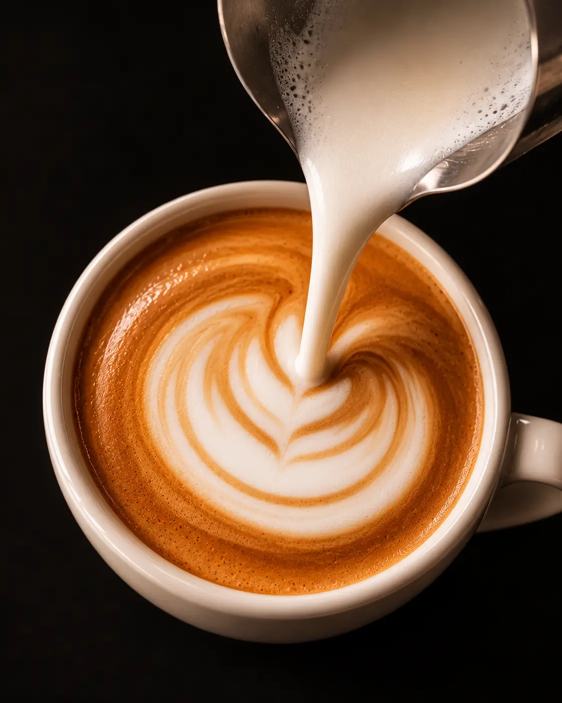
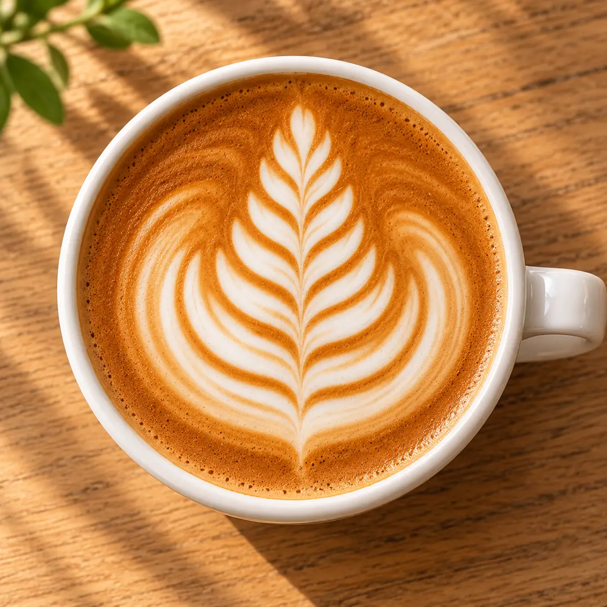

01 · Le grain
Un café qui commence
par un bon grain.
Arabica d'altitude, récolté à la main, torréfié en petites quantités chaque semaine. Origine : Éthiopie, Colombie (exemple).





01 · Le grain
Arabica d'altitude, récolté à la main, torréfié en petites quantités chaque semaine. Origine : Éthiopie, Colombie (exemple).
02 · La mouture
Les arômes s'envolent vite : nous moulons juste avant l'extraction. Notes de cacao, de noisette et de fruits rouges.
03 · L'espresso
Neuf bars, 93 °C, une crème épaisse et dorée. Le geste du barista fait la différence.
04 · Le lait
Lait frais de ferme, texturé à la vapeur jusqu'à devenir velouté, sans grosses bulles.
05 · Le latte art
Une feuille dessinée à la main. Chaque tasse est servie chaude, tout de suite.
Voir la carteFaites défiler
Notre histoire
Maison Origine est née d'une idée simple : servir un café dont on connaît l'histoire. Nous travaillons directement avec quelques petits producteurs, et nous torréfions en petites séries pour garder le goût du grain.
Ici, rien n'est pressé. Du grain à la tasse, chaque étape est faite avec soin, par des gens qui aiment ce qu'ils servent.
Texte et chiffres d'exemple (maquette).
La carte
Prix « exemple », non contractuels.
Boissons végétales sur demande (+0,40 €, exemple). Allergènes : lait, gluten, œufs, fruits à coque.
Galerie


Venir nous voir
12 rue des Torréfacteurs
45000 Orléans (adresse d'exemple)
Horaires d'exemple.